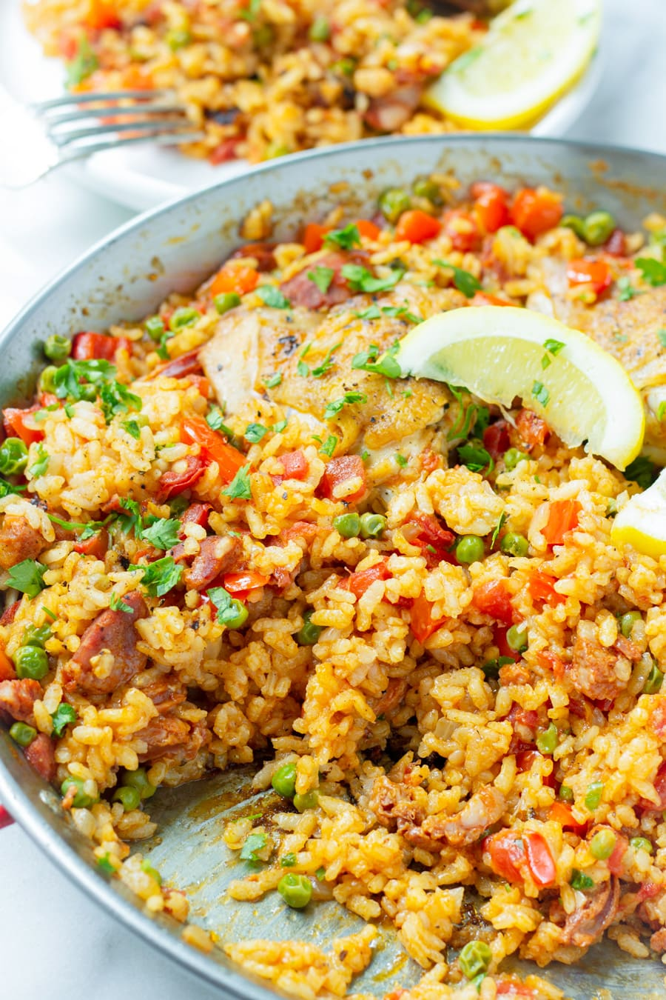

Paella

Recipe description
Quick and easy (and only one-pot) teriyaki chicken with sauce and broccoli is a
perfect weeknight dinner with a side of steamed rice.
Ingredients
- 2 tablespoons olive oil.
- 1 tablespoon paprika.
- 2 teaspoons dried oregano.
- salt and black pepper to taste.
- 2 pounds skinless, boneless chicken breasts, cut into 2 inch pieces.
- 2 tablespoons olive oil, divided.
- 3 cloves garlic, crushed.
- 1 teaspoon crushed red pepper flakes.
- 2 cups uncooked short-grain white rice.
- 1 pinch saffron threads.
- 1 bay leaf.
- ½ bunch Italian flat leaf parsley, chopped.
- 1 quart chicken stock.
- 2 lemons, zested.
- 2 tablespoons olive oil.
- 1 Spanish onion, chopped.
- 1 red bell pepper, coarsely chopped.
- 1 pound chorizo sausage, casings removed and crumbled.
- 1 pound shrimp, peeled and deveined.